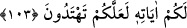

103. Hep birlikte Allah’ın ipine (İslâm’a) sımsıkı yapışın; parçalanmayın. Allah’ın
size olan nîmetini hatırlayın: Hani siz birbirinize düşman kişiler idiniz de O,
gönüllerinizi birleştirmişti ve O’nun nîmeti sâyesinde kardeş kimseler olmuştunuz.
Yine siz bir ateş çukurunun tam kenarında iken oradan da sizi O kurtarmıştı. İşte
Allah size âyetlerini böyle açıklar ki doğru yolu bulasınız.
“Allah’ın ipi”nden maksat; İslâm dînî veya Allah’ın kitabıdır.
Âyetteki “habl” lâfzı, istiâre yoluyla İslâm veya kitap lafızlarının yerine
kullanılmıştır. Çünkü bunların her ikisi de, insanları helakten kurtarma ve matlûba
ulaştırmada ipe benzemektedir. Nitekim ayakların kayma ihtimâli olan tehlikeli köprü
vs. gibi bir yerden geçerken, bu geçidin her iki yanına bağlanmış bir ipe tutunduğu
zaman kişinin korkusu zâil olur. İşte ebedî saâdetin ve Rabb’in rızâsına ermenin yolu da
böyle kaygandır. Bu yoldan sapmanın pek çok sebebi vardır. Birçok insanın da ayağı
kaymıştır. O halde her kim Kur’ân-ı Kerîm’e; şerîat-i müstakîm’e ve kerem sahibi
Allah’ımızın apaçık delillerine sarılırsa, sırat-ı müstakîmde yürümeye muvaffak olur.
Nâr-ı cahîme götürecek taşkınlıklardan -tıpkı ipe yapışarak acıtıcı bir azaba dûçâr
olmaktan kurtulanlar gibi- emin olur.
“Bölünmeyin” kitap ehli gibi aranızda anlaşmazlığa düşerek haktan ayrılmayın.
“Allah’ın size olan nîmetini hatırlayın.”
Hani siz câhiliye döneminde birbirinize düşman idiniz, aranızda kin, adâvet ve bitip
tükenmez savaşlar vardı. Yani “birbirinize düşman iken size verdiği nîmeti hatırlayın.”
Deniliyor ki: Buradaki muhataplar, Evs ve Hazrec kabileleridir. Bunların ataları olan
Evs ile Hazrec ana-baba bir kardeş iken çocukları arasında düşmanlık ve dargınlık baş
gösterdiği için yüz yirmi sene birbirleriyle savaşmışlar.
Sizi İslâm’a girmeye muvaffak kılarak “kalplerinizi uzlaştırdı” da “O’nun” bu
ısındırma “nîmeti ile kardeş oldunuz.” Hakk’ın kelâmı üzerinde ittifak eden; birbirinin
iyiliğini isteyen; birbirine merhamet eden; Allah için kardeş olma prensibinde birleşip
birbirlerini seven, kardeşler oldunuz.
“Siz ateşten bir çukurun kenarında bulunuyordunuz.” Yani küfrünüzden dolayı az
daha cehennem ateşine düşüyordunuz. Çünkü bu halde iken ölseydiniz, cehenneme
düşmüş olacaktınız.
Bu ifade, muhatapların cehenneme düştükten sonraki muhtemel hayatlarını, cehennem
çukuruna düşmelerine ramak kalmış bir vaziyette çukurun başında oturuyor olmakla
misallendirmektedir.
Allah, sizi müslüman olmaya muvaffak kılarak cehennem çukurundan kurtardı. Allah,
size âyetlerinin delâletlerini işte böyle açıklıyor ki yola gelesiniz. Hidâyette sebât edip
hidâyetinizin artmasını istediği için açıklıyor.
Allah’ın ipine yapışanlar iki kısımdır. Birinci grup: Sûret ehlidir ki bunlar meşrepleri
îcâbı amele önem verdikleri için, olayların sebeplerine bağlı kalırlar. İkinci grup ise,